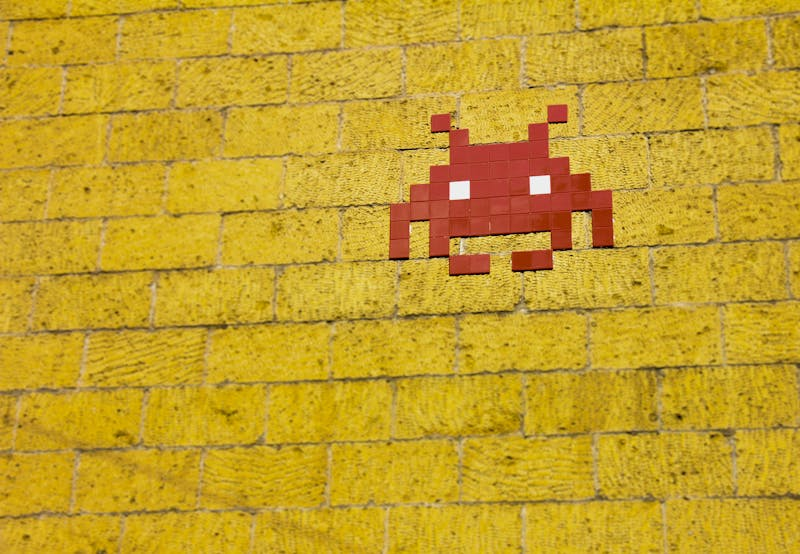

Free first, or build it yourself — the complete toolkit for AI-powered game development.
AI agents can now scaffold, code, and ship arcade games with minimal human intervention. The trick is picking the right combination of agentic framework, game engine, and AI coding assistant — or just building your own agent from scratch.
This guide groups every tool by category, rates them free-first, and ends with a "build it yourself" blueprint using the raw Anthropic Claude Agent SDK.
Category 1Orchestrate multi-step AI workflows — planning, coding, testing, iterating — without manual hand-holding.
Stateful, graph-based multi-agent orchestration by LangChain. Model your game dev pipeline as nodes: design → code → test → deploy.
Best for: Complex workflows with branching logic. Lowest latency of all frameworks.
github.com/langchain-ai/langgraph →Role-based multi-agent teams. Assign "Game Designer", "Coder", "QA Tester" roles and let them collaborate like a real studio.
Best for: Intuitive role delegation. Feels like managing a virtual team.
github.com/crewAIInc/crewAI →Microsoft's conversational multi-agent framework. Agents debate and refine game mechanics through structured dialogue.
Best for: Iterative refinement through agent conversation. Great for game balancing.
github.com/microsoft/autogen →Software dev simulation — PM, architect, engineer, QA agents collaborate with SOPs. Can generate entire game projects from a one-line prompt.
Best for: Full project scaffolding from a single description.
github.com/geekan/MetaGPT →Free engines that AI agents can target — the runtime where your game actually lives.
The king of browser arcade games. HTML5/Canvas/WebGL, massive ecosystem, publish to CrazyGames/Poki/itch.io instantly.
Best for: Web-native arcade games. AI agents love generating Phaser code — it's well-documented and LLM-friendly.
phaser.io →Python game library using SDL. Dead simple for prototyping — AI agents can generate a working arcade game in a single prompt.
Best for: Rapid prototyping. Python = the language AI models know best.
pygame.org →Full open-source engine with visual editor, GDScript, C# support. 2D excellence with 3D capability as you grow.
Best for: Serious arcade projects. Scene-based architecture maps well to agent-generated code.
godotengine.org →Lua-based 2D framework. Tiny footprint, zero boilerplate, perfect for jam-style arcade games.
Best for: Minimalist arcade games. Entire game fits in one file — ideal for AI generation.
love2d.org →Fun-first JavaScript game library. Opinionated API that reads like pseudocode — AI agents generate near-perfect Kaboom code on first try.
Best for: Quick arcade games with minimal setup. The API is almost natural language.
kaboomjs.com →The actual AI that writes your game code — from autocomplete to full autonomous coding.
Anthropic's terminal-based coding agent. Opus 4.6 with 1M token context — can reason across your entire game project at once. #1 on SWE-bench.
Best for: Deep multi-file game projects. Understands architecture, not just syntax.
claude.ai/code →AI-native IDE with Composer mode for multi-file visual editing. 1M+ users. Supermaven-powered autocomplete is blazing fast.
Best for: Visual game development. See changes across files in real-time.
cursor.com →2,000 completions + 50 chat requests/month free, no credit card. Lowest friction entry point for individual game devs.
Best for: In-editor assistance while you're hands-on coding game logic.
github.com/features/copilot →Google's terminal coding agent. Most generous free tier of any AI coding tool — great for budget-conscious indie game devs.
Best for: High-volume code generation without hitting limits.
github.com/google-gemini/gemini-cli →Browser-based AI app builder. Generates full-stack apps in one shot — including Phaser games with preview. No local setup needed.
Best for: Zero-setup game prototyping. Share a playable URL in minutes.
bolt.new →Skip the frameworks — wire up your own agent with the raw Anthropic SDK. Full control, zero overhead.
Here's a minimal agent using the @anthropic-ai/claude-agent-sdk that scaffolds a complete Phaser.js arcade game:
// agent-arcade.mjs — Minimal agent to scaffold a Phaser arcade game
import { Agent } from '@anthropic-ai/claude-agent-sdk';
const agent = new Agent({
model: 'claude-sonnet-4-6',
instructions: `You are an arcade game developer.
When asked to create a game, generate a complete
single-file Phaser.js game with:
- HTML boilerplate with Phaser CDN
- Game config (800x600, arcade physics)
- Preload, create, update functions
- Player movement, enemies, scoring, game over
Output the complete file ready to open in a browser.`,
tools: ['bash', 'file_read', 'file_write'],
});
// Run the agent with a game prompt
const result = await agent.run(
'Create a Space Invaders clone with Phaser.js. ' +
'Include particle effects, a high-score system, ' +
'and progressive difficulty. Save to game.html'
);
console.log('Game created:', result.output);That's it. 15 lines. The agent handles the tool loop — it'll write the file, test it by reading it back, and iterate if something's wrong. No framework overhead, no "crew" setup, no graph definitions.
Need multiple agents? Just compose them — one agent designs the game concept, another writes the code, a third tests it. No framework needed:
const designer = new Agent({ model: 'claude-haiku-4-5', instructions: 'Design arcade game concepts...' });
const coder = new Agent({ model: 'claude-sonnet-4-6', instructions: 'Write Phaser.js games...' });
const tester = new Agent({ model: 'claude-haiku-4-5', instructions: 'Review game code for bugs...' });
const concept = await designer.run('Design a neon-themed brick breaker');
const game = await coder.run(concept.output);
const review = await tester.run(`Review this game:\n${game.output}`);Total cost to start: $0. Scale up to paid tiers only when you hit limits.

In early 2026, the Dodo Payments team asked AI agents to build 8 browser arcade games — and they one-shotted every single one. Games like "Flappy Dodo" and "Transaction Snake" were generated, tested, and deployed with minimal human intervention. The workflow went from "write me a game" to "ship it" in under an hour per game.
Google Cloud's survey of 615 game developers confirms: 87% already use AI agents in their workflows. This isn't future tech — it's the current standard.
@anthropic-ai/claude-agent-sdk, point it at Phaser.js, and prompt it with your arcade game idea. You'll have a playable prototype before lunch.